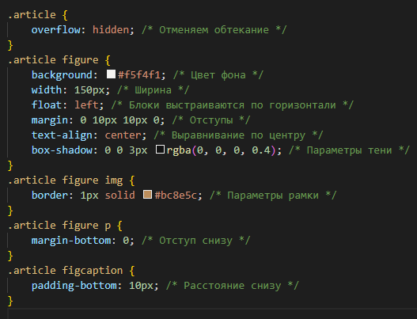
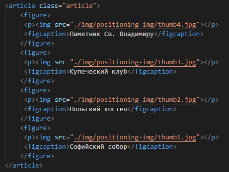
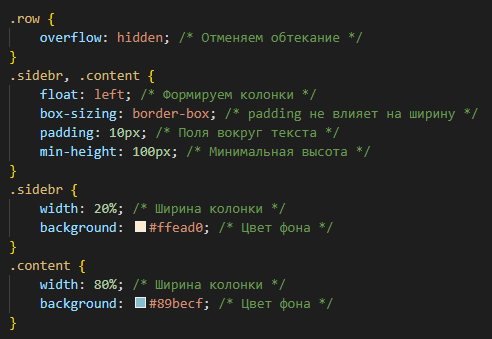
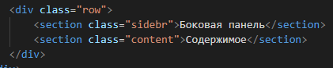
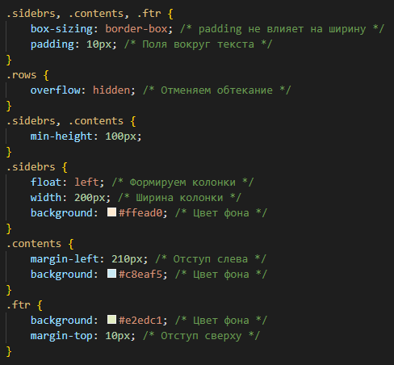
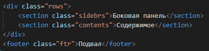
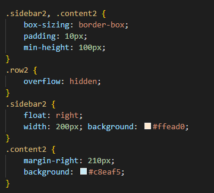
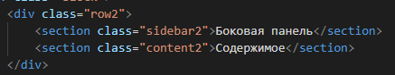
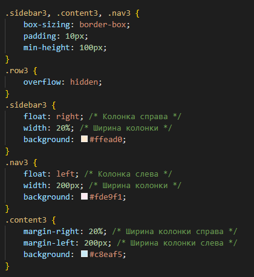
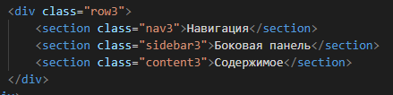

Примеры использования float
С помощью свойства float можно размещать элементы по горизонтали рядом друг с другом, что позволяет верстать типовые фрагменты веб-страниц, вроде врезок, горизонтальных меню, каталога товаров, колонок и др.
Галерея
Для создания галереи фотографий мы воспользуемся элементом <figure>, к которому добавим стилевое свойство float со значением left. Само изображение и подпись к нему вставляется внутрь <figure> через элементы <img> и <figcaption> (пример 3).
Пример 3. Создание галереи
 


Поскольку текст в <figcaption> имеет разную длину, высота блоков также получается разной, из-за чего некоторые блоки «цепляются» за другие и не переходят на следующую строку.
Здесь может помочь установка фиксированной высоты <figure> через свойство height или использование строчно-блочных элементов.
Двухколоночный макет
Двухколоночный макет наиболее популярен в веб-дизайне за счёт своей универсальности и простоты. Как правило, в широкой колонке располагается основное содержимое, а в узкой, называемой ещё сайдбар (от англ. sidebar, боковая панель), навигация, реклама и др. Рассмотрим несколько типовых макетов, в которых колонки различаются шириной и расположением.
1. Ширина всех колонок задана в процентах
Если ширина каждой колонки известна, то нам достаточно указать её через width и добавить свойство float со значением left (пример 4). Естественно, общая ширина колонок не должна превышать 100%.
float позволяет менять порядок элементов <section> в коде, тем самым меняя и расположение колонок. Если sidebar и content переставить местами, то колонка с содержимым окажется уже слева.
Класс row введён для универсальности и отменяет действие float ниже колонок, к примеру, для корректного добавления подвала.
Пример 4. Двухколоночный макет
 
2. Ширина левой колонки задана, правая занимает оставшееся пространство
Для макета, где ширина левой колонки задана в пикселях, свойства float и width применяются только к левой колонке. При этом край правой колонки смещается с помощью свойства margin-left на ширину левой колонки или превышает её (пример 5).
В данном примере левая колонка остаётся фиксированного размера, а правая занимает всё остальное доступное пространство
Пример 5. Использование margin-left
 
3. Ширина правой колонки задана, левая занимает оставшееся пространство
Код похож на предыдущий пример, HTML остаётся прежним, а в стилях меняем значение float на right и ставим margin-right вместо margin-left (пример 6).
Пример 6. Использование margin-right
 
Трёхколоночный макет
Трёхколоночный макет часто используется в тех случаях, когда двух колонок уже недостаточно или требуется особым образом разделить материал. Например, одна колонка отдается под навигацию, вторая под основное содержимое, а в третьей публикуются новости сайта или другая информация. Три колонки обеспечивают большую свободу выбора размещения материалов вроде иллюстраций, рекламных баннеров, объявлений и др.
Принцип вёрстки этого макета похож на двухколоночный — боковые колонки в коде HTML ставятся выше остальных и к ним добавляется свойство float со значением, соответствующим стороне расположения (right для правой колонки, left для левой). Также требуется свойство width, оно задаёт ширину боковых колонок, при этом ширину можно указывать в пикселях или в процентах. Для центральной колонки используем свойства margin-left и margin-right со значениями, соответствующими ширине левой и правой колонок (пример 7).
Пример 7. Трёхколоночный макет
 